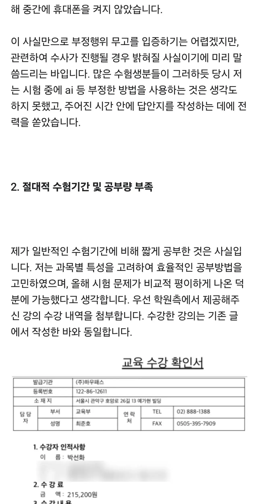
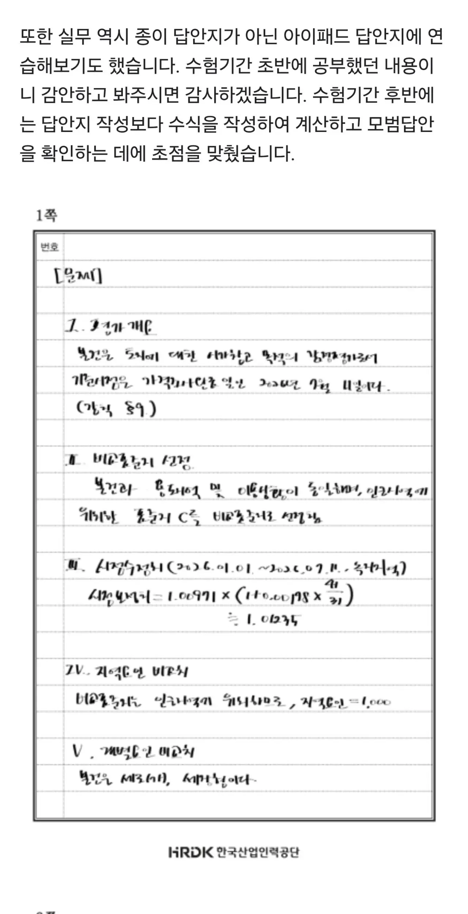
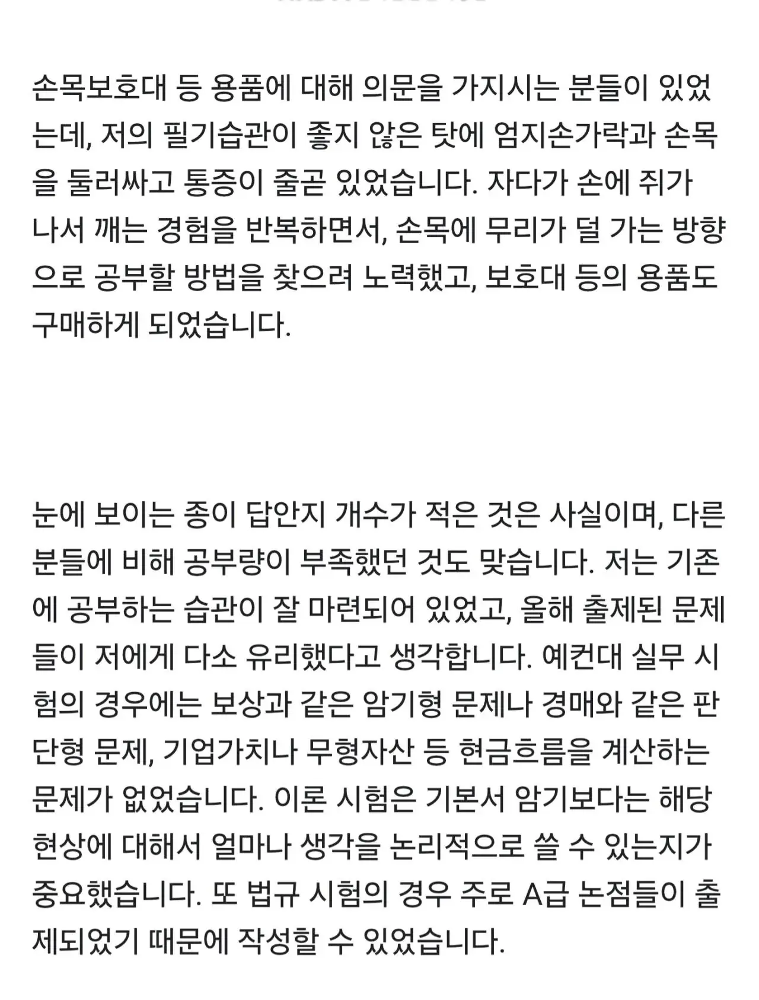
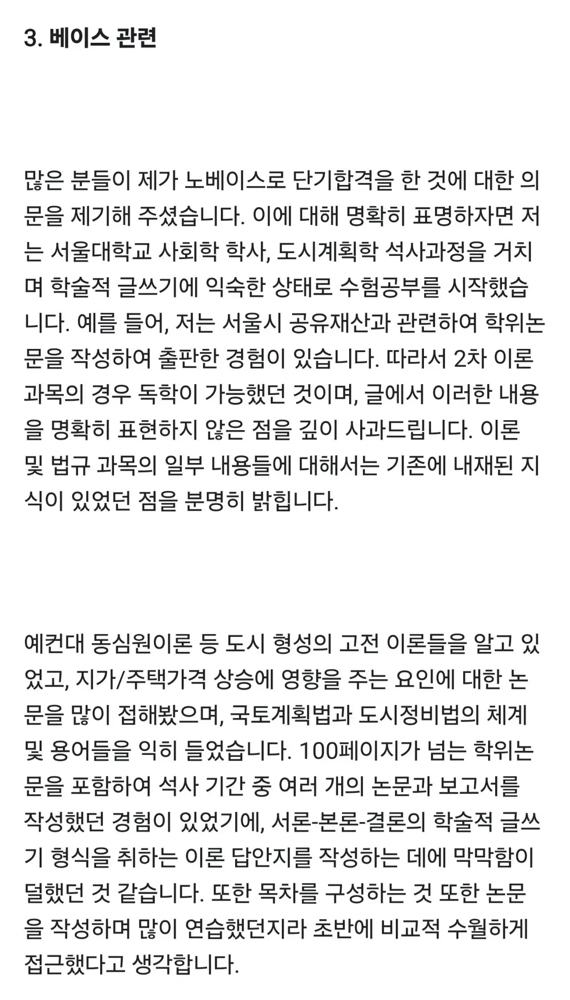

치팅 안했고 원래 서울대 학사-도시계획학 석사라 기본적인 지식이 있다.
노베이스로 6개월만에 합격했다는 뉘양스로 느껴졌다면 미안하다
치팅을 안한게 맞으면 노베 6개월로 합격했다 라고 꺼드럭 거리다가
유탄 맞은듯




치팅 안했고 원래 서울대 학사-도시계획학 석사라 기본적인 지식이 있다.
노베이스로 6개월만에 합격했다는 뉘양스로 느껴졌다면 미안하다
치팅을 안한게 맞으면 노베 6개월로 합격했다 라고 꺼드럭 거리다가
유탄 맞은듯
감평 해본 사람이면 저걸 베이스라고 말한다고? 하면서 의문이 들만함.
?? 도시계획학이랑 부동산은 관계 깊은거 아님?
관계는 깊은데 수험이랑은 좀 동떨어져보임. 물론 베이스는 됨. 감평사갤에서 대부분 의심중. 경험자들이니 가다 나오겠지
합격수기 대부분이 꺼드럭대고 본인 성공신화 자랑글이라 놀랍지도 않음
어차피 도파민 중독된 대중은 검증을 요구할 것. 관련분야 종사자와의 대담 자리 마련하는게 빠르고 속편할듯
노베이스처럼 보이면서 비틱하려다가?
비틱질도 많이 하지 공무원 6개월하고 붙음(토익 등 영어점수 아주 높고 행정행정법 등 관련과목 바로 기출 바로 풀수 있는 정도 베이스 있음은 생략)
수험생들은 다시는 노베 수험기간 비틱질을 하지 마십시오
6년 넘게해도 못붙는 사람 널린걸
1차, 2차 합해서 6개월에다
워드에 문제풀이라... 흠
이번 세무사처럼 감평도 연수원에서 추가시험 운영해야할듯
전문직 수험생들 서울대 전공생 한둘인줄 아나..
수험은 별개임
워드에 문제풀이는 진짜 신박하네ㅋㅋㅋㅋ
생각보다 자주 쓰이는 방법임. 손목 아픈 수험생 많음. 백지인출도 워드로 하기도함.
나도 예전에 특정 과목 한정으로 타이핑하며 공부하긴 했는데...그걸 전과목으로 하는 건 처음 봄
저 바닥은 원래 저런가보네
난 저거랑은 비교도안되게 쉬운 ㅈ밥시험이긴 했는데 손목 박살나서 젓가락질도 제대로 못할 정도인 때가 있었음..
매일 양손에 손목보호대 차고다니고 공부도 타이핑으로 하고 문 열때 손으로 안열고 몸으로 열었다ㅋㅋㅋㅋ 저사람도 손목아팠다 한거보니까 손목때문에 일부러 그랬을수도 있을듯
대기전에 꺼드럭비 먼저 냈어야지 에잉
세무사도 평균 수험기간 3년 반인 걸로 아는데 쟤넨 급이 다르네
감평사 평균 준비기간이 5~6년인데 2년만에 된 사람은 봤어도 6개월은 신박하긴하네
5~6년은 장수생이고 평균 3~4년 빠르면 2년차도 좀있음 근데 1년도있긴해 서울대 유관학과 학석사면 초시동차합격도 가능은하다생각하는데 그냥 비틱하려고 6개월이라고 이야기한거같은 느낌
이건 지식이 노베이스인거지 머리는 이미 풀베이스 였던거 아니냐
도시계획학 석사면 지식이 노베이스인 것도 아님
석사 도시계획학이면 환경대학원이네. 환경대학원이면 부동산개발론 도시계획법 같은 수업도 많이 열리고 해서 감평 분야랑도 연계가 꽤 많음. 경제, 지리 이쪽 연구도 활발하고.
박사....해야겠지?
이 사람 그리고 사람들이 이상하다고 할 때마다 후기글 내용 계속 수정하던데 애초에 시험지도 깨끗하고.. 의심스러운 건 어쩔 수 없음
2차 공부 내용이 너무 없기도 하고
서울대 학석사에 전공자면 뭐
글고 감평사 과목보면 그나마 접점있는게 부동산학원론이고 이거도 교집합이 있는거지 다시공부해야할거임
그니까 실질 노베이스도 틀리진 않음
이야... 저렇게도 되는구나
부럽다
노베6개월이면 꺼드럵 ㅇㅈ이지 함부로 의심하는게 문제고 ㅋㅋ
솔직히 또 검증한다고 했다가.....뭐 어제처럼 일 날까봐.. 의혹제기도 솔직히 못하겠음 이젠
왜못해 요구해야 기준이 빡세지지.
지금 세무사협회도 구술면접 자체적으로 시행한다 하고 감평사협회도 회계사도 준비중일겨
2차 시험지로 gpt 킬러 돌리면 알겠지 뭐
꺼드럭하려고 조금 과장했는데 시기가 좀 안좋았다는거잖아. 뭐 그런애들은 널리고 널렸으니
저도 전기기사 노베이스 6개월 했습니다
물회차로 3개월 했읍니다..
다음차례 찾는중이라 바쁘다
냥이들 때문에 의심이 만연한 사회가 되어버린듯, 서울대 들어간거 까지 입증해라! 하면 해야됨?
원래 전문직 합격수기는 꺼드럭이 좀 들어가긴해. 뽕 거나하게 드링킹한 상태에서 쓰거든.
나도 세무사 생동차 1년이라고 썼었는데 사실 전문대 세무회계과인데다 세무사사무실도 다녔음. 용어랑 기반지식은 갖고 시작한거. 사람에 따라서는 베이스 있다 볼수도 있고, '전문대에서 가르친게 무슨 도움이 되냐' 해서 노베이스로 볼 수도 있음. 학원에서도 '그게 무슨 베이스냐, 이 시험이 쉬운 시험인줄 아냐' 했었고. 근데 회계, 세법 익숙해서 도움된것도 맞음.
서울대 다닐정도면 공부머리는 있는건데 기반지식 있으면 될수도 있다고 봄. 앞으로 합격수기 쓰는 애들은 최대한 배경 붙여서 주절주절 쓰겠구만.
이미 2명이나 치트로 밝혀져서 자비없이 마녀사냥 시작될지도.
이게 제일 우려된다.
이 미친 냥이들이 믿음을 다 깨버려서 컷에 아슬아슬하게 합격한 애들이나 저학력자들 다 뒤지게 생겼네
내 친구 중에 7급 공무원 후기 쓴 애 있는데 (공무원 몰림현상 피크였을 때) 남은 3학기를 시험과목 겹치는 전공교양, 교양으로 채워 넣고 (행정학, 경제학 등) 공무원 공부를 메인 학교 생활을 서브로 두고 1년 반 공부해서 수험기간이 총 2년+@개월로 합격했는데 졸업식 (2월) 이 후 공부한 기간 7개월만 잡아서 7개월 준비하고 합격했다고 쓰긴 함.
저게 노베이스라고 꺼드럭대니까 욕처먹지
타이밍 안좋게 꺼드럭대다가 그냥 쳐맞는거 같은데 구라치는 새끼들은 일단 해명이 저렇게 논리적이지 않음
오케이~ 다음~
옛날엔 뱀심장으로 찔렀는데 틀렸으면 부끄러워하거나 찌른애한테 바람ㅇㅣ거꾸로불렀는데
이제는 꺼드럭거렸다고 ㅈㄹㅋㅋ 합격수기가 그럼 꺼드럭비틱이지 뭘바람
1차 6개월은 인정 가능함 기사시험 좀 어려운정도? 공인중개사 동차급? 그런데 2차까지? ㅋㅋㅋㅋㅋㅋㅋㅋ감평사 공부해 본 사람으로서 웃고 간다 ㅋㅋㅋㅋㅋㅋㅋ2차가 어느정도냐면 서울대 나온 사람도 하루에 순공부시간 10시간 해서 빨라야 2년 걸림 그만큼 2차 공부량이 엄청나고 6개월 내에 전 과정을 다 이해하고 외운다? 말이가 안된다 ㅋㅋㅋ시험 범위가 너무 넓어서 비유하자면 사전을 외워서 단어들은 기본이고 지엽적인 내용이나 어려운 국어 문법을 달달 외우고 또 거기서 운이 따라가지고 자기가 외운게 시험에 나와야 합격할 수준임 전문직 시험중에 회계사 변리사 다음 감평사 수준으로 난이도가 높은 시험임
서울대 학사네
리트냥이 마냥 아예 문외한은 아니고 확실히 공부 찍먹은 해본 걸 알겠음. 그게 합격할 정도의 내공이냐 했을때 충분한 답변은 아닌듯. 사실 일반인들이야 저런 내용자체를 모르지만 문제는 감평준비생들, 현업자들이 끄덕끄덕할 정도여야 하는데 저걸로 수긍이 갈까? 답안지에 현출하듯이 감평 바닥에서 알아들을 맥락과 언어를 써서 조금 더 높은 수준의 내용을 이야기 해야했을거 같은데. 본인이 아예 2차 답안지를 하나 써버리던지?
JLPT 처음쳤는데 N2 2달 합격했네요 ㅎㅎ (씹덕베이스 10년)
음 9급의 삶에 만족하며 살아야겠군 우냐냐우냐
이제 확실히 꺼드럭질 성공 신화 이런건 줄어들긴할듯 ㅋㅋ
본래 학벌로 커버하려는 거 같은데 감평사 협회에서 알아서 해야할 듯
그냥 자기 학력으로 커버치려는 것 같은데 납득 안되긴함